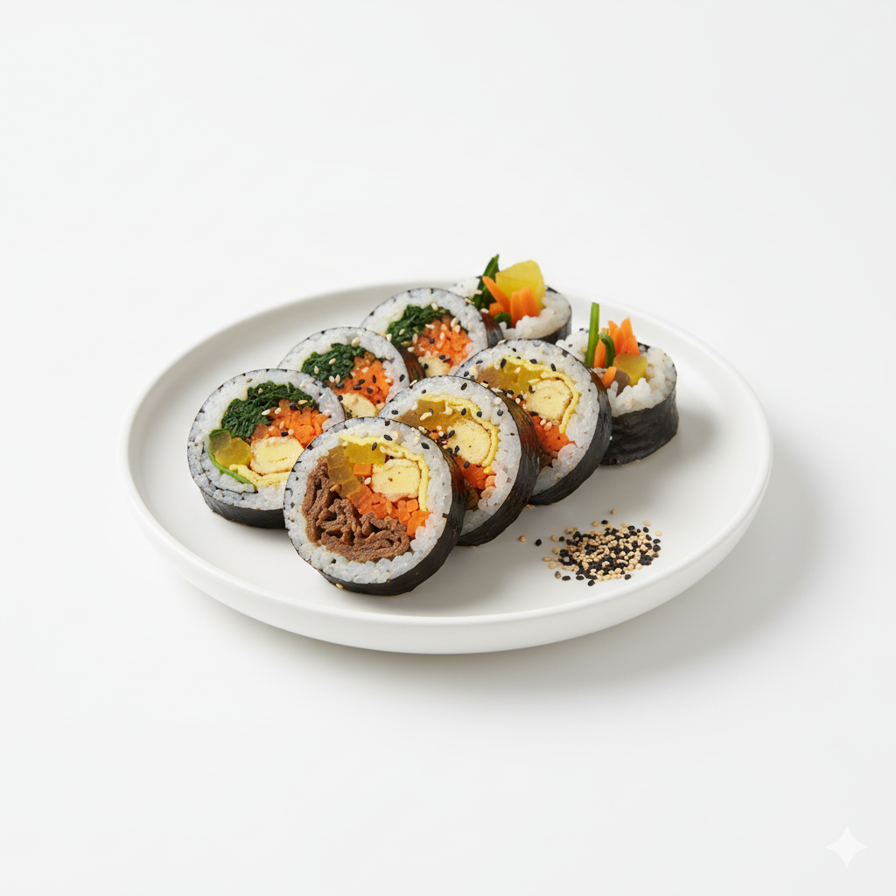

Fried Chicken with So Hot Sauce
This is a Korean-style fried chicken dish. The chicken is typically double-fried to achieve an incredibly crispy skin while keeping the inside juicy. It is then generously tossed or brushed with the "So Hot Sauce," a spicy, sweet, and savory glaze that provides a significant kick of heat (spicy). This is a popular Anju (food eaten with alcoholic beverages).
Price : 80฿